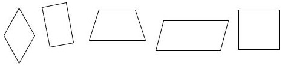
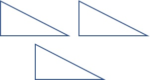
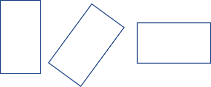
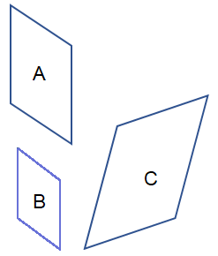
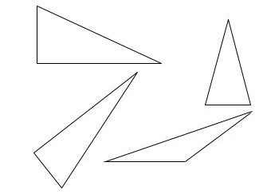
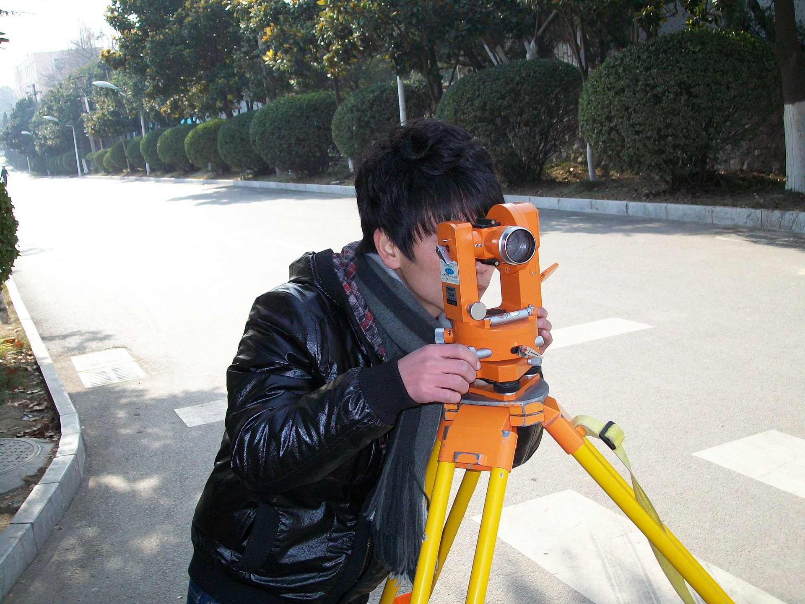

What You Should Know - Animation and Drawing by Do Ink: Changing Shapes
 Important Vocabulary
Important Vocabulary
- Attribute - a property that is used to describe something- in referring to a shape, the number of sides is an attribute
- Quadrilateral - any closed shape with four straight sides
- Rotate - to turn or move around a point
- Transform - to make a change to the size, location, or angles of a shape or object
- Frame - a single drawing
What is an Animation?
Animation uses pictures and motion to tell a story or show an action. Animations can be simple, like a bouncing ball or complex, like a whole movie.
Animation tricks the brain into thinking there is motion by rapidly playing images. The images are almost the same. When pictures change quickly and only have small changes between them, your brain thinks there is movement. This is called an optical illusion.


Properties of Shapes
All shapes have properties that can be used to group them. Shapes can have multiple attributes that help us group them. For example, a triangle is a polygon because it is closed and has straight sides joining at angles. Triangles have 3 sides. Not all polygons have 3 slides. A square is also a polygon because it has straight sides that join at angles, but a square has 4 sides. A circle is not a polygon. It is closed, but does not have straight sides joining at angles. There are many shapes in the polygon group. There are shapes with 4, 5, 6, 7, 8, and more straight sides.
One large group of polygons is quadrilaterals. Quadrilaterals all have four sides.
In the quadrilateral group are shapes with 4 sides. Squares, rectangles and even parallelograms are all quadrilaterals.
Transform Shapes
Moving a shape up, down, or sideways transforms or changes the location or position of the shape.

Moving a shape does not change its properties or attributes. Rotating or turning a shape, either a lot or just a little, can also transform the way a shape looks. Rotating does not change the properties or attributes of the shape.

Another type of change is in size. This also does not change the properties of a shape.

The bottom left shape is larger than the one on top and moved down. The bottom right shape is larger than the one on top and was rotated. However, all three shapes still share the same properties.
When a change is made to the length of a side or an angle, some properties may change.
Look at these triangles. These four triangles share the property that all triangles have 3 sides, but each has different angles and side lengths. Those properties did change.
Transformations can create the optical illusion of movement. Transformations that change size can make things look closer or farther away. Changes in the corners that form angles can make flat pictures look like they have three dimensions.
Career Connection and Real-World Application
Artist
Artists can use transformations to make pictures look real. Changing an object’s size can make it look closer or farther away. The artist must know what attributes can change and what must stay the same. By changing two lines, they can make a street look like it goes forever. By changing the angles on rectangles, they can make buildings look like they have depth.
The image above was created with many small changes. The lines are both thick and thin. The waves start large and get smaller. This creates the idea of movement. Cartoon artists use small changes in pictures to show movement. Many old cartoons were drawn by hand, much like the way you will make your video.
Land Surveyor
Have you ever noticed a person along a road with what looks like a camera on a tripod? That is a land surveyor. These special tools measure distances. Land Surveyors use this information, along with other tools like digital drawing software and GPS, to create 2D and 3D drawings that can be used by architects and construction workers to build roads, bridges, and buildings.

The job of early surveyors was to figure out property lines. This lets everyone know where one owner’s land ends and another begins. Over time, these measurements were also used to make maps and to plan where to put a railroad, dam, or town. These careful measurements are used even today to plan for new houses, parks, and roads. Surveyors work closely with engineers, urban planners, and architects.
In the past, knowledge of geometry was used to calculate long distances. They had to know the properties of shapes and angles. They also had to understand similar shapes, and which changes to a side or angle changed the shape. Today, surveyors still use geometry along with technology to obtain much better measurements. Due to the technology, this career requires a 4 year degree with many math courses, followed by an internship.